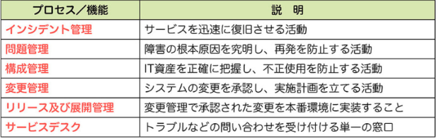

ITパス暗記ノート
8章
ITIL
ITサービスマネジメントのベストプラクティス集
PDCAサイクル
・「計画」に近い用語が入っている選択肢は、Plan
・「実行」に近い用語が入っている選択肢は、Do
・「評価」に近い用語が入っている選択肢は、Check
・「改善」に近い用語が入っている選択肢は、Act
SLM
(Service Level Management)
サービスレベル管理とは、サービスの提供者と利用者が合意した「サービスレベル」を維持・改善するための活動。
SLMでは主にPDCAの手法を使ってサービスレベルを維持・改善する
SLA
(Service Level Agreement)
サービスレベルの合意書。SLAの目的は、サービスの範囲と品質を明確にすることである
可用性
サービスを利用したいときに利用できること
可用性管理
可用性を確保するための活動
サービスサポート
日々のITサービスの運用。サービスサポートにおける「インシデント」と「問題」の違いが出題される。インシデントは「状況」、問題は「根本原因」

変更管理
システムの変更を承認し、実施計画を立てる活動
リリース及び展開管理
承認された変更を本番環境に実装すること
サービスデスク
単一窓口のヘルプデスク。目的は、サービスレベルを低下させないこと。そのため、問題管理（根本原因の究明）よりも、インシデント管理（迅速な復旧）が優先される
エスカレーション
ヘルプデスクで対応しきれない問い合わせを専門部署に引き継ぐこと
チャットボット
質問に自動的に応答する仕組み
BCM
（Business Continuity Management）
災害が起きても事業を継続させるための経営手法
BCP
(Business Continuity Plan)
事業をいかに継続するかをまとめた計画
ファシリティマネジメント
建物や設備の保有や運用、維持などを最適化する手法である
UPS
（無停電電源装置）
一時的（数分）に電力を供給するための装置
自家発電装置
長時間、システムに電力を供給するための装置
フリーアクセスフロア
取り外し可能な床パネルを敷き詰めた構造
システム監査
目的は、リスクに適切に対応しているかを評価すること。改善命令に基づいて改善活動を行うのは被監査部門。監査人は、改善活動は行わない
監査人は独立した第三者であること（身内は不可）
コーポレートガバナンス
ステークホルダーが経営を監視すること。社外取締役を登用すると、コーポレートガバナンスが強化される
内部統制
社内のすべての人が業務を健全化すること。責任者は経営者
ITガバナンス
ITを活用して、企業のあるべき姿に導く仕組みを企業に組み込むこと
職務分掌
担当者の役割や仕事の権限を明確にすること